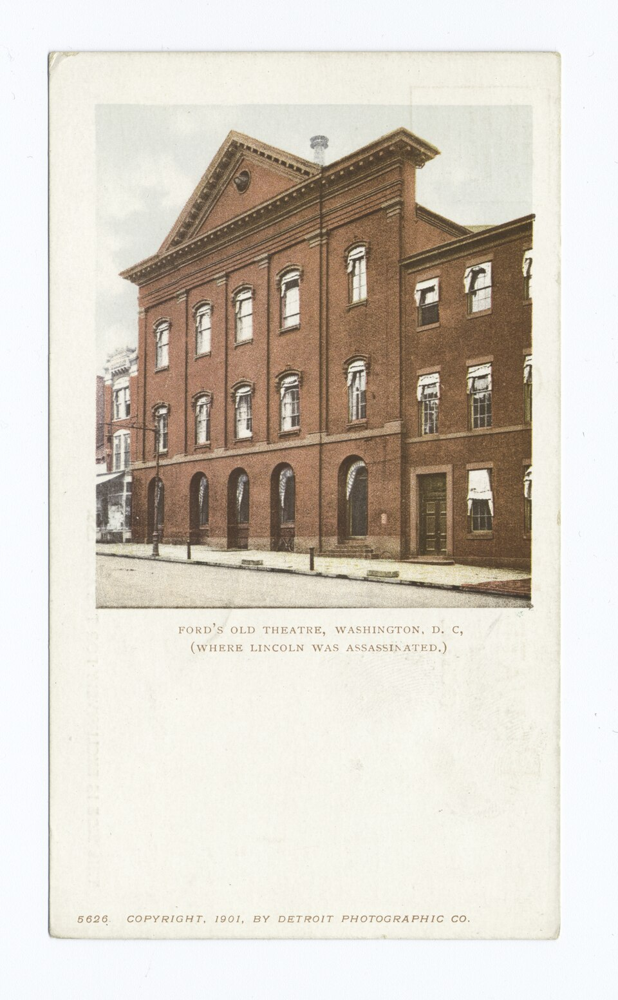

A42-POL-028 // HISTORICAL CLAIM REVIEW
The Lincoln Assassination Conspiracy
Assessment: A Booth-centered political assassination plot is documented, not speculative.

The precise allegation
The established case is that John Wilkes Booth assassinated Abraham Lincoln and that a small group of associates coordinated attacks on senior Union leaders. Broader versions allege a Confederate government-directed operation or implicate senior officials without evidence sufficient to establish those claims. The distinction matters: a real conspiracy does not make every proposed sponsor part of it.
Chronology and political context
On April 14, 1865, Booth shot Lincoln at Ford's Theatre as the Civil War was ending. Lewis Powell attacked Secretary of State William Seward the same night, while George Atzerodt failed to attack Vice President Andrew Johnson. Federal investigators arrested a network of Booth's contacts; Booth was killed during capture. The episode unfolded amid Confederate collapse, revenge rhetoric, and uncertain postwar security.
Primary historical record
Military commission transcripts, witness testimony, the defendants' statements, and contemporary correspondence document planning among Booth, Powell, Atzerodt, and others. The prosecution demonstrated a plot to kill or abduct national leaders, but its military-court process, secrecy, and rapid execution of four defendants limit modern confidence in every individual finding. The records do not establish a chain of command from Richmond or a surviving Confederate cabinet.
Corroboration and contrary evidence
Independent accounts converge on Booth's movements, the theater shooting, the attempted Seward attack, and a pre-existing abduction plan. Historians including James Swanson and Edward Steers differ over how far the assassination plan had shifted from kidnapping to coordinated murder. The coordinated attacks support a conspiracy among participants; they do not by themselves prove that the Confederate government ordered the killings.
What remains uncertain
The surviving network's exact size, the intentions of some peripheral contacts, and the extent of Confederate intelligence assistance remain debated. Several participants were dead before trial, while the government controlled the investigation and publicized selected evidence. Claims that Andrew Johnson, Secretary of War Edwin Stanton, or a hidden financial cabal engineered Lincoln's death have not gained reliable documentary or forensic support.
Calibrated verdict
A Booth-centered political assassination plot is documented, not speculative. Confidence is high that multiple associates participated in a real conspiracy; confidence is lower about the full scope of the kidnapping-to-murder transition and the culpability of lesser-known contacts. A state-directed Confederate operation or an internal Union-government plot remains unsubstantiated by the presently accessible record.
What evidence could change this assessment
A newly authenticated order linking Confederate leadership to the murder, or contemporaneous communications showing a named official knowingly directing Booth, would materially expand responsibility. Conversely, a complete private diary or reliable evidence that one convicted participant was coerced could revise individual roles. Any proposed proof should be tested against court transcripts, timelines, and independently preserved correspondence.
Sources and source limits
- Ford’s Theatre — Lincoln assassination historySummarizes the attack and participants using the Ford's Theatre historical record; public-history overview, not a substitute for trial documents.
- National Archives — Trial and execution of the Lincoln conspiratorsDescribes federal records and proceedings; catalog guidance establishes holdings, not the truth of every allegation.
- Library of Congress — Abraham Lincoln papersProvides primary manuscripts and political context; the collection is broad and does not independently resolve every conspirator's role.